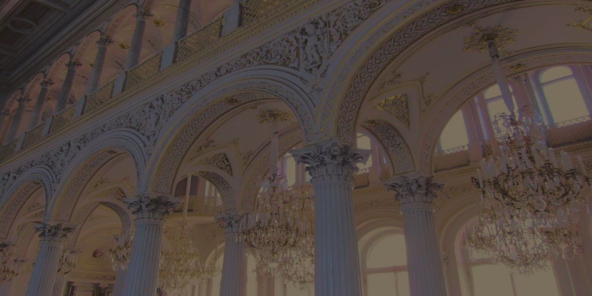
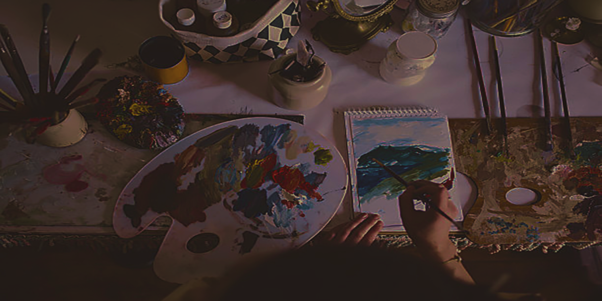

ABOUT US
"Artisticamente" è un luogo di scoperta e connessione tra l'arte e la psicologia. Siamo un'azienda dedicata a esplorare l'interazione profonda e stimolante tra la mente umana e le diverse forme artistiche, come la scultura, la pittura, la fotografia e l'architettura. Il nostro obiettivo è quello di creare uno spazio in cui le emozioni, le esperienze interiori e le espressioni artistiche si fondono per ispirare, arricchire e trasformare la vita delle persone.
In "Artisticamente", crediamo che l'arte abbia il potere di rivelare l'inconscio, stimolare l'immaginazione e risvegliare emozioni profonde. La psicologia ci aiuta a comprendere il significato sottostante dell'arte, a esplorare il legame tra l'opera e l'osservatore, e a creare un ponte tra l'artista e il pubblico. Vogliamo diffondere l'importanza di questo connubio, offrendo spazi di riflessione e condivisione, dove tutti possono trovare ispirazione e crescita personale attraverso l'arte.

In "Artisticamente", ci impegniamo a promuovere il benessere mentale attraverso l'arte, offrendo una visione unica dell'interazione tra la psicologia e le varie forme d'arte. Vogliamo abbattere le barriere tra la comprensione dell'arte e della psiche umana, rendendo accessibili concetti complessi e promuovendo una maggiore consapevolezza di sé.

Siamo entusiasti di condividere con te l'entusiasmo per l'arte e la psicologia. Se desideri esplorare il profondo legame tra l'essere umano e l'arte, se sei curioso di comprendere le emozioni che le opere d'arte suscitano in te, se sei interessato a scoprire nuove prospettive su te stesso e sul mondo attraverso la lente dell'arte, ti invitiamo a unirti a noi in questo viaggio di scoperta e crescita.
Esplora, condividi, ispirati: Benvenuto in "Artisticamente"!